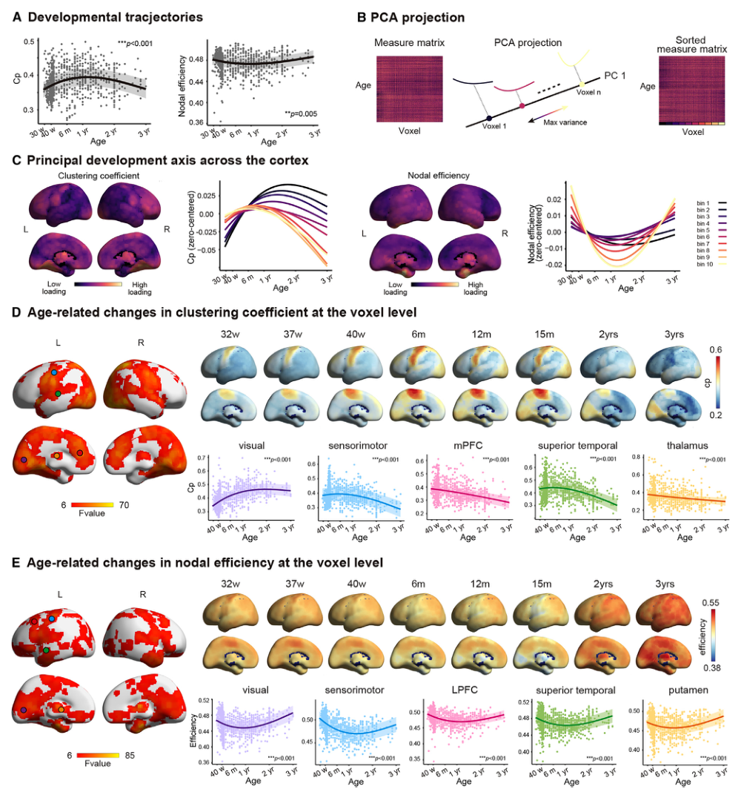
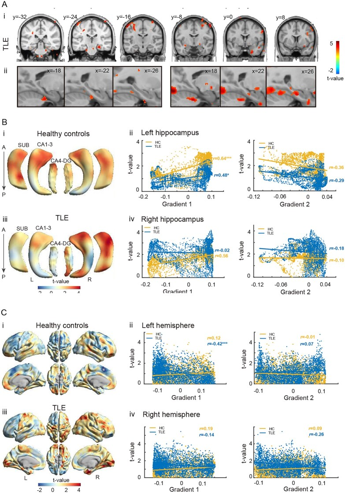

实验室简介
Computational Connectome Lab（CClab，计算连接组学实验室）致力于理解人脑如何在发育与经验中不断塑造自身，以及这一过程如何在神经疾病中发生改变。我们结合多模态脑影像、脑连接组学与计算分析方法，从脑区之间的连接与协同出发，研究大脑结构与功能的组织规律，探索脑网络如何支持认知与行为。
我们的研究围绕人脑可塑性与神经疾病中的异常重组展开。一方面，关注发育、学习与经验如何塑造脑网络，揭示大脑在不同生命阶段调整连接、整合信息和适应环境的机制；另一方面，研究神经疾病如何改变脑网络的组织与动态，理解这些变化与认知功能受损之间的关系，并区分可能的适应性代偿与功能失调。
通过连接脑影像、网络组织与认知行为，CClab 希望描绘大脑从正常发育、经验塑造到疾病重组的变化图景，为理解人脑的适应能力、个体差异及认知健康提供新的视角。
人类大脑皮层的功能组织沿初级感觉区到高级联合区的连续轴展开，构成感觉-联合层级（Sensorimotor-association, S-A）。这一层级结构被视为连接感知加工与高级认知功能的核心组织架构，且与个体发育、衰老及多种神经精神疾病的发生发展密切相关。我们基于功能连接组梯度分析方法，将高维脑功能连接数据映射到连续低维空间，从而定量描述脑功能组织的层级结构。在此基础上，整合了132个研究中心、33,247名个体的多中心磁共振影像数据，构建了覆盖孕32周至80岁的人脑功能层级发育图谱，系统揭示了功能层级的全生命周期变化规律。
研究发现，人脑功能层级并非出生时即达到成人状态，而经历“启动—形成—拓展与稳定”的连续发育过程。围产期（约孕后32周～出生后1月龄）脑功能组织首先表现为前侧与后侧的空间分化模式，从婴儿期至幼儿早期（约3月龄～4岁），前后侧梯度范围收窄，逐步形成经典的S-A轴，在儿童晚期与青春期，大脑皮层S-A梯度的空间特征清晰显现，此后数十年间，S-A梯度结构进入长期相对稳定状态。进一步研究发现，脑功能层级变化与网络分离和整合能力、皮层结构成熟以及认知功能发展具有一致的空间组织规律。初级感觉运动系统较早成熟，而高级联合系统随着年龄增长持续增强跨区域信息整合能力，体现了人脑通过平衡功能分化与信息整合实现复杂认知功能的组织原则。同时，多模态影像分析显示，功能层级变化与皮层厚度发育、皮层几何扩张具有显著关联，但与T1w/T2w比值反映的微结构变化并不完全一致，表明脑功能层级形成及发育涉及到生物学过程共同调控。

生命早期前1000天作为脑认知功能网络发育的关键窗口期，其功能分离与整合的动态组织机制直接奠定个体脑智发育的神经基础。尽管功能分离与整合已被认为人脑高级认知加工的核心网络原则，当前对早期发育阶段该机制的系统性认识仍存在显著空白。我们基于国际公开的665名婴幼儿纵向多模态数据集（妊娠28周至3岁，共930次扫描），通过复杂网络分析与广义加性混合模型，系统地描绘了早期脑功能连接组的发育规律。
研究发现，初级感觉运动区、视觉区及高级联合皮层的功能连接呈现差异化发育轨迹，其中高级联合皮层逐步取代初级皮层称为网络核心枢纽节点。在全局网络层面，表征功能分离的聚类系数呈倒U型发育，而表征功能整合的全局效率则呈U型变化，二者沿皮层前后轴形成空间梯度演化模式。模块化分析进一步显示，感觉运动与视觉模块率先成熟，系统内连接与模块化指数同步发展。基于支持向量回归构建的个体化预测模型证明，出生时的功能连接强度及分离/整合指标可显著预测1.5岁幼儿的认知和语言水平。通过整合BrainSpan发育转录组数据，揭示了上述网络发育模式与微观神经发育过程（如树突发育、突触发育、神经元分化、神经元迁移、轴突发育和髓鞘化等）、代谢过程（如有氧糖酵解和氧化磷酸化等）相关的基因表达有关，从多角度阐明脑功能网络的分子基础。

模式分离作为情景记忆的核心计算机制，通过神经活动编码实现相似输入的差异化存储，其功能完整性直接决定记忆的精确性。传统理论将海马齿状回（DG）视为离散的功能模块参与并主导模式分离功能，却难以解释记忆编码中观察到的连续性特征梯度（如情景信息的渐进式区分），更无法刻画海马损伤等疾病（如颞叶癫痫）导致的分布式功能重组。
我们创新性地采用低维空间映射的方法——基于功能连接的梯度映射，发现了模式分离任务的激活模式呈现沿海马长轴分化的模式，并且在一定程度上呈现初级-联合皮层的渐进式变化。该发现打破了模式分离激活是海马亚区分布的限制，通过连续的空间表征揭示了海马功能沿长轴的渐进变化，为认识人类情景记忆功能的机制提供了新的思路。此外，将该方法应用于左侧颞叶癫痫病人的研究中，发现左侧颞叶癫痫患者左侧海马沿长轴激活模式减弱，而右侧海马激活增强，揭示了海马损伤患者其对侧功能代偿的网络重组模式。基于梯度空间构建的加权指数能够成功地预测个体的模式分离行为得分，证明梯度空间的连续表征模型可跨人群稳定预测模式分离行为表现。
